Penguatan Data Quantity dan Data Quality untuk Wilayah Sungai BWS Kalimantan III.

Pengelolaan sumber daya air yang baik bergantung pada data yang akurat dan tersedia tepat waktu. Pengamatan manual sudah tidak cukup untuk skala dan kecepatan keputusan saat ini.
Tanpa sistem yang tangguh, data terputus dan keputusan tertunda. Inilah kendala yang paling sering terjadi.
Satu mitra untuk seluruh siklus monitoring — perangkat keras, perangkat lunak, dan pendampingan.
Akses melalui web & mobile, dapat dibuka kapan saja oleh setiap bidang.
Beacon Engineering siap mendukung transformasi monitoring SDA melalui sistem telemetri yang menghasilkan data lengkap, valid, mudah digunakan, dan berkelanjutan.